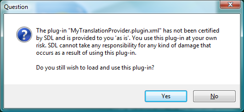

Plug-in deployment
This section describes how to deploy a Plug-in Package (*.sdlplugin) for use in Trados Studio. It also covers updating to a new version of the plug-in package and uninstalling a plug-in package.
Installing a Plug-in Package
Double click the plug-in package and follow the instructions.
Note
During development, you can configure the output path of the project to point to %AppData%\Roaming\SDL\SDL Trados Studio\16\Plugins\Packages\. This is already configured if you created the project with one of the project templates available in the Trados Studio SDK here. For more information on this, see Setting up a Developer Machine.
The following warning message will be shown while Trados Studio starts: 
To avoid this message from appearing, you need to submit your plug-in package to SDL for verification. Once verified, your plug-in package will be signed by SDL and the warning message will not appear anymore. To verify the plugin, send an email to app-signing@sdl.com with a link from where the plugin can be downloaded for verification. Once the verification is done, you will receive an answer email with a download link, where you will be able to obtain the signed version of the plugin.
Once Trados Studio has started, go to the Tools > Plug-ins dialog and notice that "MyPlugin" is now listed as a plug-in and is ready to be used.
Updating a Plug-in Package
Once deployed, you can update your plug-in package by increasing the version in the plug-in package manifest (see Plug-in deployment). Double click the plug-in package and follow the instructions. Once the plug-in is deployed, start Trados Studio. The application will automatically detect the presence of the updated plug-in package, verify it, extract its contents into %AppData%\Roaming\SDL\SDL Trados Studio\16\Plugins\Unpacked\ and load it.
It is essential that you increase the version of the plug-in package as listed in the plug-in manifest, or the update will not be applied.
Uninstalling a Plug-in Package
To uninstall a plug-in, simply run the Plugin Manager that is installed with Trados Studio. If you have an older Trados Studio version, install if from here.